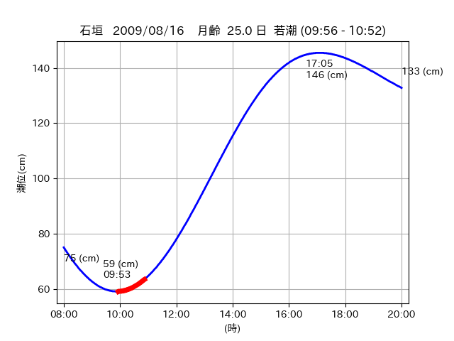
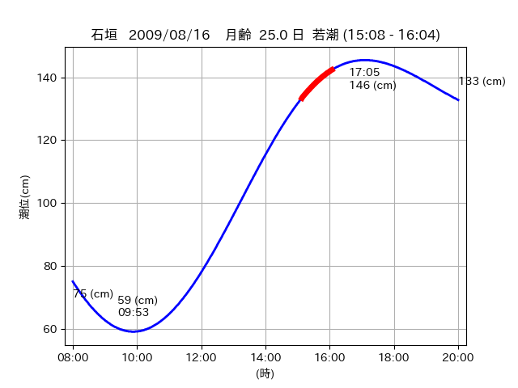

<!DOCTYPE html>
<html>
<head>
    
    <meta http-equiv="content-type" content="text/html; charset=UTF-8" />
    
        <script>
            L_NO_TOUCH = false;
            L_DISABLE_3D = false;
        </script>
    
    <style>html, body {width: 100%;height: 100%;margin: 0;padding: 0;}</style>
    <style>#map {position:absolute;top:0;bottom:0;right:0;left:0;}</style>
    <script src="https://cdn.jsdelivr.net/npm/leaflet@1.9.3/dist/leaflet.js"></script>
    <script src="https://code.jquery.com/jquery-3.7.1.min.js"></script>
    <script src="https://cdn.jsdelivr.net/npm/bootstrap@5.2.2/dist/js/bootstrap.bundle.min.js"></script>
    <script src="https://cdnjs.cloudflare.com/ajax/libs/Leaflet.awesome-markers/2.0.2/leaflet.awesome-markers.js"></script>
    <link rel="stylesheet" href="https://cdn.jsdelivr.net/npm/leaflet@1.9.3/dist/leaflet.css"/>
    <link rel="stylesheet" href="https://cdn.jsdelivr.net/npm/bootstrap@5.2.2/dist/css/bootstrap.min.css"/>
    <link rel="stylesheet" href="https://netdna.bootstrapcdn.com/bootstrap/3.0.0/css/bootstrap-glyphicons.css"/>
    <link rel="stylesheet" href="https://cdn.jsdelivr.net/npm/@fortawesome/fontawesome-free@6.2.0/css/all.min.css"/>
    <link rel="stylesheet" href="https://cdnjs.cloudflare.com/ajax/libs/Leaflet.awesome-markers/2.0.2/leaflet.awesome-markers.css"/>
    <link rel="stylesheet" href="https://cdn.jsdelivr.net/gh/python-visualization/folium/folium/templates/leaflet.awesome.rotate.min.css"/>
    
            <meta name="viewport" content="width=device-width,
                initial-scale=1.0, maximum-scale=1.0, user-scalable=no" />
            <style>
                #map_a84e2f2d7226fb0b692c9b7d7948a5f7 {
                    position: relative;
                    width: 2048.0px;
                    height: 1600.0px;
                    left: 0.0%;
                    top: 0.0%;
                }
                .leaflet-container { font-size: 1rem; }
            </style>
        
</head>
<body>
    
    
            <div class="folium-map" id="map_a84e2f2d7226fb0b692c9b7d7948a5f7" ></div>
        
</body>
<script>
    
    
            var map_a84e2f2d7226fb0b692c9b7d7948a5f7 = L.map(
                "map_a84e2f2d7226fb0b692c9b7d7948a5f7",
                {
                    center: [24.354, 124.259],
                    crs: L.CRS.EPSG3857,
                    ...{
  "zoom": 12,
  "zoomControl": true,
  "preferCanvas": false,
}

                }
            );

            

        
    
            var tile_layer_48754c2a9cb6c9f82e5cbec2c26d6df6 = L.tileLayer(
                "https://cyberjapandata.gsi.go.jp/xyz/seamlessphoto/{z}/{x}/{y}.jpg",
                {
  "minZoom": 0,
  "maxZoom": 18,
  "maxNativeZoom": 18,
  "noWrap": false,
  "attribution": "\u5730\u7406\u9662\u5730\u56f3",
  "subdomains": "abc",
  "detectRetina": false,
  "tms": false,
  "opacity": 1,
}

            );
        
    
            tile_layer_48754c2a9cb6c9f82e5cbec2c26d6df6.addTo(map_a84e2f2d7226fb0b692c9b7d7948a5f7);
        
    
            var marker_90ecd773808ce5ff23689061686abb7e = L.marker(
                [24.399, 124.2666],
                {
}
            ).addTo(map_a84e2f2d7226fb0b692c9b7d7948a5f7);
        
    
            var icon_2f8169ee29d7d31cfdbd169e9a940555 = L.AwesomeMarkers.icon(
                {
  "markerColor": "orange",
  "iconColor": "white",
  "icon": "info-sign",
  "prefix": "glyphicon",
  "extraClasses": "fa-rotate-0",
}
            );
        
    
        var popup_a51f2201310105e95509b4646c51e34d = L.popup({
  "maxWidth": "100%",
});

        
            
                var html_e3d2e87f0940b72cd42719c88cfe3d71 = $(`<div id="html_e3d2e87f0940b72cd42719c88cfe3d71" style="width: 100.0%; height: 100.0%;"><table><tr><td></td></tr><tr><td><center>20090816 No.1 </center></table></td></tr></table</div>`)[0];
                popup_a51f2201310105e95509b4646c51e34d.setContent(html_e3d2e87f0940b72cd42719c88cfe3d71);
            
        

        marker_90ecd773808ce5ff23689061686abb7e.bindPopup(popup_a51f2201310105e95509b4646c51e34d)
        ;

        
    
    
                marker_90ecd773808ce5ff23689061686abb7e.setIcon(icon_2f8169ee29d7d31cfdbd169e9a940555);
            
    
            var poly_line_e95d7fa2fbc201d6cba44102493bf9c4 = L.polyline(
                [[24.399, 124.2666], [24.3957, 124.2649]],
                {"bubblingMouseEvents": true, "color": "#00FFFF", "dashArray": null, "dashOffset": null, "fill": false, "fillColor": "#00FFFF", "fillOpacity": 0.2, "fillRule": "evenodd", "lineCap": "round", "lineJoin": "round", "noClip": false, "opacity": 1.0, "smoothFactor": 1.0, "stroke": true, "weight": 3}
            ).addTo(map_a84e2f2d7226fb0b692c9b7d7948a5f7);
        
    
            var marker_a7136fd77f35a5e6a10dc0fedcc75cf5 = L.marker(
                [24.3809, 124.2621],
                {
}
            ).addTo(map_a84e2f2d7226fb0b692c9b7d7948a5f7);
        
    
            var icon_850baf869bdd7c668e2e81e013f7b281 = L.AwesomeMarkers.icon(
                {
  "markerColor": "orange",
  "iconColor": "white",
  "icon": "info-sign",
  "prefix": "glyphicon",
  "extraClasses": "fa-rotate-0",
}
            );
        
    
        var popup_2d01af70621a3914f88d10170c9bc08a = L.popup({
  "maxWidth": "100%",
});

        
            
                var html_05d4fa3a1677d28914bef5bbdb1e6ada = $(`<div id="html_05d4fa3a1677d28914bef5bbdb1e6ada" style="width: 100.0%; height: 100.0%;"><table><tr><td></td></tr><tr><td><center>20090816 No.2 </center></table></td></tr></table</div>`)[0];
                popup_2d01af70621a3914f88d10170c9bc08a.setContent(html_05d4fa3a1677d28914bef5bbdb1e6ada);
            
        

        marker_a7136fd77f35a5e6a10dc0fedcc75cf5.bindPopup(popup_2d01af70621a3914f88d10170c9bc08a)
        ;

        
    
    
                marker_a7136fd77f35a5e6a10dc0fedcc75cf5.setIcon(icon_850baf869bdd7c668e2e81e013f7b281);
            
    
            var poly_line_50e43c8958d3112fcdaf825f0446f07e = L.polyline(
                [[24.3809, 124.2621], [24.3854, 124.2612]],
                {"bubblingMouseEvents": true, "color": "#FF00FF", "dashArray": null, "dashOffset": null, "fill": false, "fillColor": "#FF00FF", "fillOpacity": 0.2, "fillRule": "evenodd", "lineCap": "round", "lineJoin": "round", "noClip": false, "opacity": 1.0, "smoothFactor": 1.0, "stroke": true, "weight": 3}
            ).addTo(map_a84e2f2d7226fb0b692c9b7d7948a5f7);
        
    
            var marker_1fa47c60eb1ecbb76ffd0dfae89b43f3 = L.marker(
                [24.3583, 124.2597],
                {
}
            ).addTo(map_a84e2f2d7226fb0b692c9b7d7948a5f7);
        
    
            var icon_2d362e06a44a8481f6b39c21252d76b0 = L.AwesomeMarkers.icon(
                {
  "markerColor": "orange",
  "iconColor": "white",
  "icon": "info-sign",
  "prefix": "glyphicon",
  "extraClasses": "fa-rotate-0",
}
            );
        
    
        var popup_1a2e30178c0622ebcf5a48d0b8e4f407 = L.popup({
  "maxWidth": "100%",
});

        
            
                var html_1ee7826d4fdbe3d379e0a9a81954be6a = $(`<div id="html_1ee7826d4fdbe3d379e0a9a81954be6a" style="width: 100.0%; height: 100.0%;"><table><tr><td></td></tr><tr><td><center>20090816 No.3 </center></table></td></tr></table</div>`)[0];
                popup_1a2e30178c0622ebcf5a48d0b8e4f407.setContent(html_1ee7826d4fdbe3d379e0a9a81954be6a);
            
        

        marker_1fa47c60eb1ecbb76ffd0dfae89b43f3.bindPopup(popup_1a2e30178c0622ebcf5a48d0b8e4f407)
        ;

        
    
    
                marker_1fa47c60eb1ecbb76ffd0dfae89b43f3.setIcon(icon_2d362e06a44a8481f6b39c21252d76b0);
            
    
            var poly_line_58b7faa671553c0141e43a8173062bc9 = L.polyline(
                [[24.3583, 124.2597], [24.3503, 124.2584]],
                {"bubblingMouseEvents": true, "color": "#00FFFF", "dashArray": null, "dashOffset": null, "fill": false, "fillColor": "#00FFFF", "fillOpacity": 0.2, "fillRule": "evenodd", "lineCap": "round", "lineJoin": "round", "noClip": false, "opacity": 1.0, "smoothFactor": 1.0, "stroke": true, "weight": 3}
            ).addTo(map_a84e2f2d7226fb0b692c9b7d7948a5f7);
        
</script>
</html>